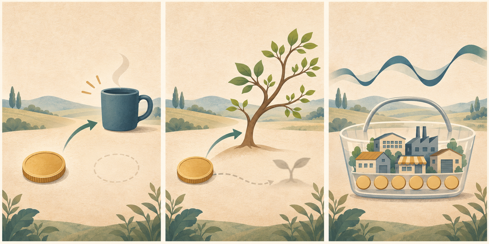

SH000905
持有中证500
PE / 10年分位27.91 / 62%
PB / 10年分位2.04 / 61%
当前 PE 位于近10年历史的 62.2% 分位，命中“持有”区间。
来源：雪球基金（近10年历史样本，项目本地重算分位）
2026年11月10日为星期二。上交所、深交所2026年休市安排显示，当日不在节假日休市区间，因此为A股交易日。报告生成时A股尚未收盘，美国市场已完成11月9日交易，四个指数最近已完成交易日均为2026年11月9日。
钱不仅能交换当下消费，也能保留未来选择。评估一笔支出时，应同时看即时效用、持续承诺和资金被占用后的机会成本；但机会成本不是固定收益承诺，也不能用来否定健康、家庭和必要生活支出。
今天按四个指数的PE分位记录并执行既定机械规则；若有计划中的大额支出，另行写下现金价格、持续成本、对流动缓冲的影响和真正获得的使用价值，再决定是否推进。
不要用历史平均收益率把机会成本算成确定数字，不要借钱放大今天的指数信号，也不要为了账户曲线取消必要的健康、家庭或生活支出。
事实：中国十月CPI同比上涨0.7%、环比持平，PPI同比上涨5.7%、环比上涨0.7%；美国十月非农就业增加16.5万人，失业率为4.1%。推断：消费端与生产端价格变化不同，企业收入与投入成本的影响会分化；美国就业与工资仍会进入需求和贴现率评估。不能据此判断：单月价格和就业数据不能单独预测指数方向，也不能替代家庭现金流决策。
PE 决定行为，PB 辅助理解温度
当前 PE 位于近10年历史的 62.2% 分位，命中“持有”区间。
来源：雪球基金（近10年历史样本，项目本地重算分位）
当前 PE 位于近10年历史的 66.9% 分位，命中“持有”区间。
来源：雪球基金（近10年历史样本，项目本地重算分位）
当前 PE 位于近10年历史的 21.9% 分位，命中“定投”区间。
来源：雪球基金（近10年历史样本，项目本地重算分位）
当前 PE 位于近10年历史的 37.4% 分位，命中“定投”区间。
来源：雪球基金（近10年历史样本，项目本地重算分位）
只保留会影响长期决策的重要变量
事实：国家统计局公布，2026年10月全国居民消费价格同比上涨0.7%、环比持平；核心CPI同比上涨0.8%，食品价格同比下降2.9%，非食品价格同比上涨1.5%。推断：消费端价格变化仍有结构差异，会通过居民购买力和企业终端定价影响收入预期。不能据此判断：单月CPI不能单独证明总需求方向、企业利润改善或指数涨跌。
查看一手来源事实：国家统计局公布，2026年10月工业生产者出厂价格同比上涨5.7%、环比上涨0.7%，工业生产者购进价格同比上涨7.9%、环比上涨1.1%；生产资料价格同比上涨7.4%，生活资料价格同比下降0.1%。推断：上游价格与购进成本变化会影响行业利润率和现金流，但影响方向取决于企业成本传导能力。不能据此判断：PPI上涨不等于所有企业收入或利润同步增长。
查看一手来源事实：美国劳工统计局公布，2026年10月非农就业增加16.5万人，失业率为4.1%；私营非农平均时薪环比增长0.4%、同比增长3.1%，8月与9月就业合计上修8.4万人。推断：就业与工资仍支持居民收入，也会进入通胀和贴现率评估。不能据此判断：单月就业报告不能单独决定美联储政策、企业利润或市场方向。
查看一手来源每天随机读透一个完整观点，而不是收藏更多标题
J.L. Collins Stock Series · 官网文章，发布于2013-06-14，修订于2025-05-12
核心主张：钱既能购买当下，也能作为生产性资本保留未来选择。消费的完整成本包括资金本身和被放弃的复利路径；持有宽基指数时，日常报价变化也不等于持有份额同步变化。但机会成本是比较工具，不是固定收益承诺，更不是拒绝所有消费的理由。
“Start thinking about what your money can earn.”
今天连接：今天的指数动作继续由PE分位机械触发；计划内新增资金和家庭支出分开决策。若比较消费与投资，先把现金流、期限、风险和实际使用价值放在同一口径，再看机会成本。
不要这样做：不要把文章中的美国市场长期回报区间当作未来保证，不要把宽基持有经验直接移植为任何指数或产品都会恢复，也不要用机会成本压过健康、家庭和必要生活。
